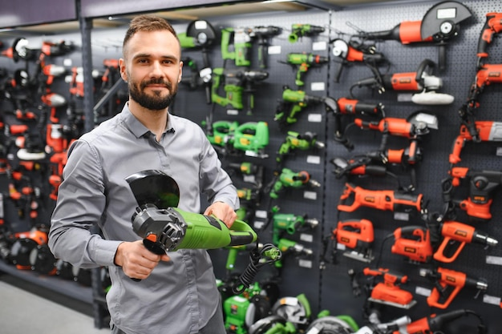

Showroom tecnico per artigiani e professionisti
Utensili affidabili, consulenza rapida, ritiro pronto per il lavoro.
Da Ferratek trovi trapani, sistemi di fissaggio e storage modulare selezionati per cantieri, officine e squadre manutentive che non possono fermarsi.
Disponibilita' immediata sui prodotti piu' richiesti per non rallentare il cantiere.
Ti aiutiamo a confrontare motori, batterie e accessori in base all'uso reale.
Linea selezionata per serramentisti, impiantisti, manutentori e squadre edili.
Un riferimento vicino per riordini, accessori e sostituzioni rapide di consumo.
Reparti in evidenza
Una gamma compatta ma credibile, costruita intorno al lavoro in campo.
Prodotti consigliati
Tre strumenti scelti per chi vuole partire subito con un setup affidabile.
Per professionisti e artigiani
Non solo prodotto: supporto su configurazione, accessori e continuita' operativa.
Ferratek nasce come showroom tecnico: ogni proposta viene costruita intorno al tipo di lavoro, alla frequenza d'uso e al ritmo della squadra.
- Consigli su combinazioni utensile + batteria + storage.
- Soluzioni per squadre mobili, manutenzione e piccoli cantieri.
- Assortimento essenziale, ordinato e pronto al ritiro.

Richiedi disponibilita' e tempi
Preventivi rapidi per acquisti singoli o piccole forniture.
Scrivici il tipo di attivita', il prodotto che ti interessa e il volume richiesto. Ti richiamiamo con una proposta chiara e compatibile con il tuo cantiere.